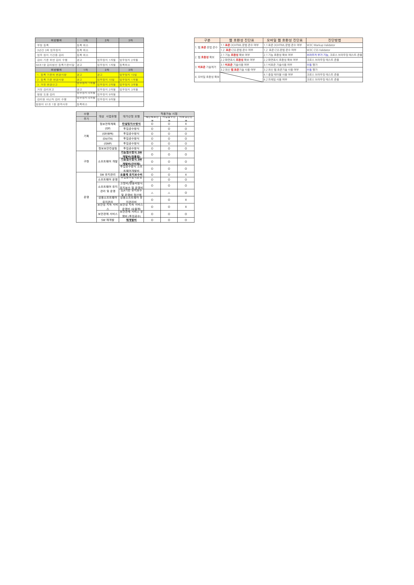
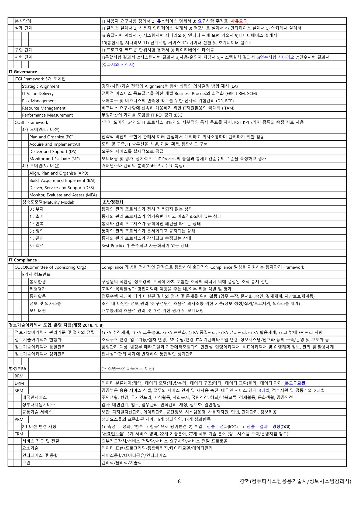

1. 서브노트 개요
본 서브노트는 감리·사업관리 전 영역을 암기 위주로 압축한 요약본이다. M02~M05에서 다룬 지침·감리기준의 핵심 수치와 함께, 특히 감리대가 산정식·감리법인 등록조건·행정처분기준·IT 거버넌스·COBIT·성숙도모델 등 시험 직전 정리에 유용한 항목을 표로 모았다.
💡 Tip · 활용법
각 표의 고유 수치(금액·비율·기간)와 암기 두문자(계절준 / 기무편안보효준일 / 초반정관최 등)를 반복 암기한다. 세부 설명은 M02~M05 해당 토픽을 참조.
2. 감리 법체계 · 의무감리 대상
전자정부법 > 시행령 > 감리기준(고시) > 가이드(발주·수행·요구관리·과업이행·사업유형별 점검).
| 구분 | 내용 |
|---|---|
| 의무감리 대상 | 사업비 5억원 이상(SW·HW 구입비 제외), 대국민서비스 또는 여러 기관 공동 구축 등 |
| 비대상(제외) | 사업비 1억원 미만(대국민·공동사용) / EA·ISP·운영·유지보수는 발주기관 필요에 따라 |
| 2단계 감리 가능 | 사업비 20억 미만 또는 6개월 미만 또는 상주감리 수행 시 |
3. 감리대가 산정 · 보정비율
감리대가 = 기본감리비 + 직접경비 + 부가가치세
기본감리비(3단계) = 특급기술자 평균임금 × (1+제경비율) × (1+기술료율) × 22.13 × (대상사업비보정금/1억)0.63
기본감리비(2단계) = … × 19.78 × (대상사업비보정금/1억)0.64
기본감리비(3단계) = 특급기술자 평균임금 × (1+제경비율) × (1+기술료율) × 22.13 × (대상사업비보정금/1억)0.63
기본감리비(2단계) = … × 19.78 × (대상사업비보정금/1억)0.64
| 항목 | 값 |
|---|---|
| 제경비율 | 110~120%에서 조정 |
| 기술료율 | 20~40%에서 조정 |
| SW개발·유지보수 / 정보시스템 운영(ISP) | 보정비율 1.000 |
| HW·SW 구입비·유지보수비 | 0.456 |
| 지식정보자원·행정정보 등 DB구축비 | 0.422 |
| 전산설비·시설물 공사·임차·설치·회선·재료비 | 0.000 (제외) |
💡 Tip
3단계는 계수 22.13·지수 0.63, 2단계는 19.78·지수 0.64. 전산설비·시설공사·회선료 등은 보정비율 0(감리대가 산정에서 제외)임에 유의.
4. 감리법인 등록 · 감리원 구분
감리법인은 등록 요건을 갖춰 등록하며, 감리원은 자격·고용·업무 기준으로 구분된다.
| 구분 | 내용 |
|---|---|
| 감리법인 등록조건 ★ | 상근감리원 5인 이상(수석감리원 1인 포함), 자본금 1억원 이상, 임원 결격사유 없을 것 |
| 신고사항(3개월 이내) | 명칭·대표/임원·감리원·자본금·소재지·계속교육 이수사항 변경 시 안전행정부장관에게 신고 |
| 감리원 구분 | 자격: 수석감리원·감리원 / 고용: 상근·비상근 / 업무: 총괄감리원(1년 이상 수석)·상주감리원·전문가 참여(30% 이내) |
💡 Tip
전문가 참여는 30% 이내(모바일·보안 진단원 등), 상근감리원은 전체의 50% 이상. 두 비율을 구분해서 기억.
5. 행정처분기준 (전자정부법 7장 벌칙)

| 위반행위 | 1차 | 2차 | 3차 |
|---|---|---|---|
| 부정 등록 | 등록 취소 | ||
| 3년간 3회 업무정지 | 등록 취소 | ||
| 업무정지 기간 중 감리 / 감리기준 위반 감리 | 경고 | 업무정지 1개월 | 업무정지 2개월 |
| 거짓 감리보고 | 경고 | 업무정지 2개월 | 업무정지 3개월 |
| 감리원 아닌 자가 감리 수행 | 업무정지 6개월 | 업무정지 9개월 | - |
Q. 감리법인 등록조건으로 옳은 것은?
정답 ② — 상근감리원 5인 이상(수석감리원 1인 포함), 자본금 1억원 이상.
6. 감리 수행 – 권고유형 · 평가 · 암기어
감리 수행 시 개선권고 유형·과업이행 평가·검토결과 등 결과 표기 기준과 암기 두문자를 정리한다.
| 구분 | 값 |
|---|---|
| 개선권고 유형 | 필수 / 협의 / 권고 |
| 과업 이행 평가 | 적합 / 부적합 |
| 조치 상태 | 조치완료 / 조치중(예상완료일·방법) / 반영불가(발주자 확인 근거문서) |
| 검토 결과 | 적정 / 미흡 / 해당없음(반영불가 or 권고) |
| 문서 보관 | 발주자는 감리계약 종료 후 5년간 문서 보관 |
💡 Tip · 암기 두문자
- 사업관리 점검관점 [계·절·준]: 계획 적정성 · 절차 적정성 · 준수성
- 산출물 품질특성 [기·무·편·안·보·효·준·일]: 기능성·무결성·편의성·안정성·보안성·효율성·준거성·일관성
- 요구사항 [충·실]: 충족성·실현성
7. SW 재개발비 변경률 (요약)
SW 재개발비는 설계·코드·통합시험 변경률을 반영해 산정한다(상세는 M03).
| 항목 | 산식·값 |
|---|---|
| 특정 트랜잭션 기능설계 변경률 | UI(0.25) + 업무로직 BL(0.45) + 데이터로직 DL(0.30) |
| 총변경률 | 설계(0.4) + 코드(0.3) + 시험(0.3) |
| 재개발비 | 재개발 원가 + 이윤(25% 이내) + 직접비 (암기 "재개발 설곳이 없데유") |
| 유지관리 난이도(요율) | 10 + (5 × TMP / 100), 요율 10~15% |
💡 Tip
M03의 트랜잭션 설계변경률(0.25·0.45·0.30)과 동일. 총변경률 배분은 설계 0.4 / 코드 0.3 / 시험 0.3. 이윤은 25% 이내.
8. 전자정부 성과관리 지침 (’18.2.8)
「중앙행정기관 전자정부사업 사전협의 지침」·「지방자치단체 정보화사업 사전협의 지침」·「정보시스템 운영 성과관리 지침」을 통폐합한 지침.
| 구분 | 내용 |
|---|---|
| 사전협의 검토결과 | 추진 / 조건부 추진 / 추진보류 |
| 결과 통보 | 신청일부터 30일 이내 통보(이의는 15일 이내 소명 → 15일 이내 재검토) |
| 성과측정 대상 | 서비스 개시 3년 경과 정보시스템(한시·일몰시스템 제외, 모바일 앱은 별도 지침) |
| 운영 유지관리유형 | 유지 / 기능고도화(업무↓) / 재개발(비용↓) / 폐기검토 → 통폐합·재개발·폐기 |
💡 Tip · 변경점
기존 '정보시스템 운영 성과관리 지침'에서는 성과측정 대상이 5년 경과였으나, 통폐합된 '전자정부 성과관리 지침'에서는 3년 경과로 바뀐 점에 유의(M02 대비 개정).
9. 웹 호환성 · 표준 · 모바일 앱
전자정부서비스는 웹표준(UTF-8·W3C)을 준수하고 웹 호환성·모바일 앱 성과측정 기준을 따른다.
| 구분 | 내용 |
|---|---|
| 웹표준(제5조) | 문자 UTF-8, 디자인 W3C CSS, 동적 W3C DOM·ECMA-262. 호환성 확보 시 HTML5 가능 |
| 서비스 방식 | 반응형 웹 구축, 비표준 기술 제거. 특성 고려 모바일 웹·앱·하이브리드 앱 |
| 모바일 앱 성과측정 | 운영 개시 1년 경과 대민 앱. 대민서비스 앱 정량 40점 미만 폐기 |
| 웹 호환성 진단 | 표준 (X)HTML(W3C Markup Validator), CSS(W3C CSS Validator), 기능·화면표시 호환(크로스 브라우징) |
10. IT 거버넌스 · COBIT · 성숙도모델

ITGI Framework 5개 도메인 ★★
| 도메인 | 설명(관련 예) |
|---|---|
| Strategic Alignment | 경영·사업·기술 전략 정렬로 최적 의사결정(EA) |
| IT Value Delivery | 비즈니스 목표 달성 위한 프로세스 최적화(ERP·CRM·SCM) |
| Risk Management | 재해복구·연속성 확보 전사 위험관리(DR·BCP) |
| Resource Management | IT 자원활용 극대화(ITAM) |
| Performance Measurement | 무형자산 포함 IT ROI 평가(BSC) |
COBIT 도메인 ★★
| COBIT 4.x (4도메인·34프로세스·318통제목표) | COBIT 5.x (거버넌스·관리 분리) |
|---|---|
| PO(계획·조직) · AI(도입·구축) · DS(운영·지원) · ME(모니터링·평가) | APO(정렬·계획·조직) · BAI(구축·획득·구현) · DSS(제공·서비스·지원) · MEA(모니터·평가·심사) |
성숙도모델(Maturity Model) – "초·반·정·관·최" ★★
| 레벨 | 상태 |
|---|---|
| 0 부재 | 통제·관리 프로세스가 전혀 없음 |
| 1 초기 | 임기응변·비조직화 |
| 2 반복 | 규칙적 패턴을 따름 |
| 3 정의 | 문서화·공지됨 |
| 4 관리 | 감시·측정됨 |
| 5 최적 | Best Practice 준수·자동화 |
💡 Tip · 암기
COBIT는 KGI·KPI 2가지 측정지표 사용. 5.x의 최대 특징은 거버넌스와 관리의 분리(EDM 거버넌스 + APO/BAI/DSS/MEA 관리). 성숙도 6단계는 "부·초·반·정·관·최(0~5)". COSO는 Compliance를 전사 관점으로 통합한 프레임워크.
Q. COBIT 4.x의 4개 도메인이 아닌 것은?
정답 ④ — APO는 COBIT 5.x의 관리 도메인이다. 4.x는 PO·AI·DS·ME.